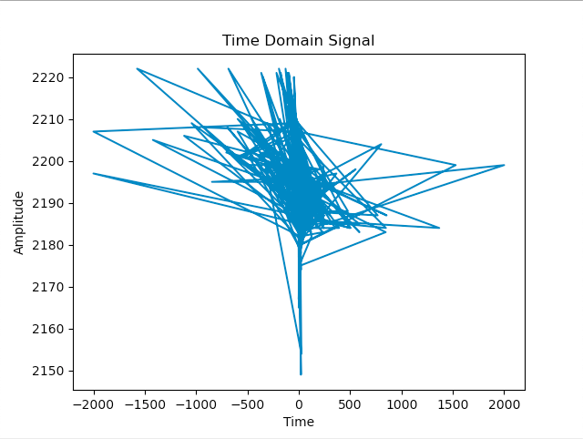
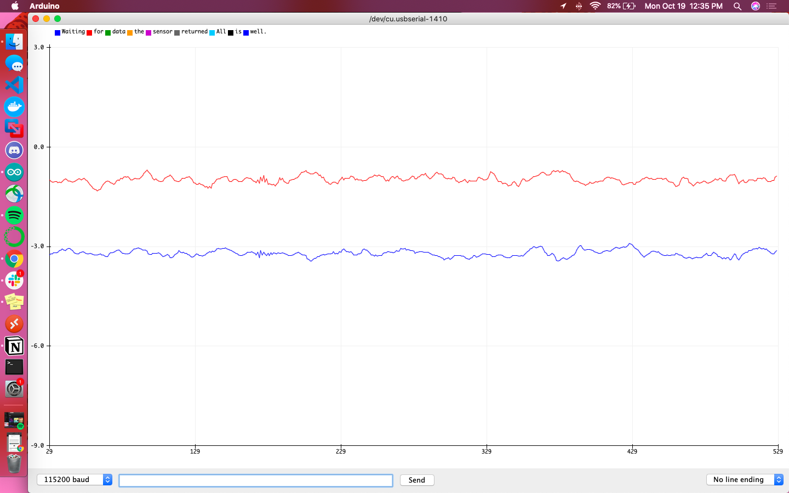

Lab 6
IMU, PID, and Odometry
The inertial measurement unit being used for the robot can determine orientation through the on-board accelerometer, gyroscope, magnetometer, or some combination of the three. To best understand the pros and cons of each sensor, this lab walked us through the outputs and robustness of those outputs when responding to noise and external stimuli. These findings culminated in attempting to design a proportional–integral–derivative (PID) feedback loop to control the rotational speed.
Before looking into the IMU’s onboard sensors, the component itself had to be hooked up to Klaus. This was done via an I2C connection specifically at address 0x69. This matches to expectations laid out by the datasheet, which specified that the I2C address is 0x69 but is jumper selectable to 0x68.
A primary overview of how the sensor readings changed with movement is plotted in the graphs below. I took care to move the robot forward and backwards, tilt it, and rotate it in order to get a wide range of movement data. Overall the accelerometer experienced more aggressive noise spikes in its readings than the gyroscope; this is best exemplified in the results for forward/backward motion while accelerating. The accelerometer responded more to the act of being tilted. When rotating, both the accelerometer and gyroscope’s data for the axis around which they were rotating was flatter than that of the other axes.

Results from moving forwards and backwards
Results from tilting
Resulting from rotating
Calculating pitch from the accelerometer’s data was as simple as importing the math.h library and calling the expression atan2(x,z)*180/M_PI; where x and z were (respectively) the accelerometer’s x and z coordinates. Roll was similar, utilizing the y coordinates instead of x atan2(y,z)*180/M_PI;
Below is a table compiling the values of pitch and roll at degrees -90, 0, and 90. An interesting trend to note is the increased accuracy of the calculated pitch value when measuring angle with respect to pitch, as well as for the calculated roll value when measuring angle with respect to roll.
Finding potential frequencies of unwanted noise was done by tapping the sensor and plotting the Fourier transform of its outputted data. I specifically looked at the x values of the accelerometer, the time domain plot of which can be found below.
This data was converted into the frequency domain by following the Python tutorial here. There was no single discernible spike in noise, so I chose the cutoff frequency to be the equally sized spike at the largest frequency: 258Hz. The period is equal to the reciprocal of frequency, T = 2191.422, and RC could be found with the equation fc = 1/2piRC = 0.0006168796243871912. The values of T and RC were used to find alpha to determine the behavior of the low pass complimentary filter to be put on the accelerometer’s data. Alpha was found to be approximately 0.99, which resulted in a graph that matched the noisy data exactly.

The low pass filter was implemented using the following function, which required the current variable, its previous value, and alpha.
float applyLPF(float curr, float prev, float alpha){ return alpha * curr + (1 - alpha) * prev; }
I used a guess and check method to find a better value of alpha, one that would smooth out the noisy result function somewhat. The fact that the function header for the LPF had alpha as a parameter made changing its value easy. I checked 0.5, 0.3, and 0.1, whose graphs are shown below. As the alpha decreased, the function became flatter and less susceptible to spikes. I settled on an alpha of 0.3 as it smoothed out the accelerometer data but still left its overall shape recognizable.


The following functions were defined to calculate pitch, roll, and yaw from the gyroscope’s output data.
float getPitchGyr(float prev, float x) { return prev - x * (float)dt/1000000; } float getRollGyr(float prev, float y) { return prev - y * (float)dt/1000000; } float getYawGyr(float prev, float z) { return prev - z * (float)dt/1000000; }
dt was chosen to be 1000000 as values with lower maginutes (such as 100000) didn’t respond for both pitch and roll data, only roll.
The following graphs are meant to help give a direct comparison between the accelerometer and gyroscope for their calculations of pitch and roll. The blue line is the accelerometer’s raw reading, the red line is the filtered accelerometer reading, and the green line is the raw gyroscope reading. Additionally the sign of accelerometer data was flipped so that the sign was consistent with that of the gyroscope’s data.
Overall the gyroscope values were definitively more steady and less responsive to sudden changes than the accelerometer. It didn’t fit the accelerometer’s data particularly well, but did give indication of local minima/maxima at the relevant points in time.
pitchFusion = (prevPitchFusion + pitchGyr * dt/1000000) * (1-alpha) + pitchAccLPF * alpha; rollFusion = (prevRollFusion + rollGyr * dt/1000000) * (1-alpha) + rollAccLPF * alpha;
The code above was used to fuse the readings from both sensors and compute pitch and roll. This required both the current and previous values to be saved as global variables for future calculations. When the sensor was stationary or being tapped directly, pitch and roll lined up almost exactly. On the other hand, when the robot was being moved and flipped around, pitch and roll had opposite peaks of maxima and minima, seeming as if one was lagging behind the other.
Referencing equations discussed during the lecture, the yaw angle was calculated from the magnetometer’s outputs using the following equations:
xMag = myICM.magX()*cos(pitchGyr*M_PI/180)-myICM.magZ()*sin(pitchGyr*M_PI/180); yMag = myICM.magY()*sin(pitchGyr*M_PI/180)*sin(rollGyr*M_PI/180)-myICM.magY()*cos(rollGyr*M_PI/180)+myICM.magZ()*cos(pitchGyr*M_PI/180)*cos(rollGyr*M_PI/180); yawMag = atan2((myICM.magX()*cos(pitchFusion) + myICM.magZ()*sin(pitchFusion)), (myICM.magY()*cos(rollFusion) + myICM.magZ()*sin(rollFusion)));
Taking care to lay the IMU flat on the table, it was rotated slowly to find a yaw of 0, indicating that the sensor was pointing north. It proved to be nearly impossible to find the exact northern heading using the magnetometer, though it was closer in range to 0 than the gyroscope. Yaw found from the gyroscope had an average reading of 5.904574468 while from the magnetometer the average yaw was 0.208297872. As shown by the image below, I was able to get within 10 to 15 degrees of north (although the compass readings on my phone were contradictory to my housemates, so I’m not 100% sure if I got the right heading for north).
PID control is a type of feedback loop that takes in a setpoint (the goal) and the error (distance from achieving that goal) in order to adjust parameters that will get the object in question closer to its goal. With respect to Klaus, this PID control loop was meant to get the robot to spin on its axis as a constant speed.
This process started by understanding the effect of the motor’s magnitude on yaw, done by ramping the motors up and down in magnitude.
if (motorRamp) { t0 = micros(); // start time counterRamp++; //***** Operate the Motor Driver *****// // It uses .setDrive( motorName, direction, level ) to drive the motors. Serial.println("here"); if(counterRamp>100) { // if its time for the next motor value, incease/decrease it if(increase) { motorVal++; Serial.println("increase"); } else { motorVal--; Serial.println("decrease"); } counterRamp = 0; if(motorVal == 255 || motorVal == 0) { increase = !increase; //switch direction if cant increase anymore } } Serial.println("adjust"); turnRight(motorVal); }
Though simple in nature, this task proved to be extremely difficult due to a lack of perfectly smooth surfaces in my house. Eventually I determined that using a wooden chair that was slightly dampened resulted in a somewhat jittery but otherwise reliable rotation (though presumably at higher motor values than anticipated). There were drawbacks to using this chair, namely that it has a divot in its center and needed to be tilted every so often to shake the robot out of the dip.
There are two versions of this program: one tethered, requiring a direct serial connection to grab the yaw values; and the other untethered, utilizing the START_BYTESTREAM_TX Bluetooth command. I used the tethered program to ensure the ramping worked. This was done with the robot elevated from a surface to have no load.

When placed on a surface and triggered using a Bluetooth command, the following yaw values were recorded. These are not what the expected trend line would appear to be, and this can be attributed to the lack of a smooth enough surface for the robot to rotate cleanly. This data does exhibit that the deadband is below a motor value of around 210 and the maximum rotational speed occurs around 250. The motors are also uneven, with the right set of motors turning before the left set.
Given that my motor ramp data wasn’t as conclusive as I would’ve liked, I used a guess and check method to find the minimum rotational speed. This was found to be at 190, which had a yaw of around 350 rad/s. With this value in mind, it’s important to understand the accuracy of ranging using the time of flight sensor, as this will eventually be used for scanning the robot’s environment. The datasheet for the VL53L1X indicates that the minimum timing budget is 20 ms and can only be used in Short distance mode.

If Klaus were to start 0.5m away from a wall pointing straight towards it, it would experience a change in orientation by a rotation of 7 degrees every 20ms (equivalent to 0.503m versus 0.5m). Though the percent difference at this close of a measurement is less than 1% (specifically 0.59%) this effect will be magnified on distances of larger magnitudes. This may result in a sigma or signal error from the ToF sensor; a possible solution is to rotate slower and make the change in orientation less drastic in a short time span.
I utilized the PID_v1.h library to compute the output of a PID control loop. All this required was the coefficients for the weights of the proportional, integral, and derivative terms. I started with tuning the proportional term as this would give the initial jump to start the rotation of the robot. I stepped up from 1, 2, 3, and 5, finally settling on a kp of 5 because it produced the most reliable spin. I also made sure to keep the PID output between 190 and 255 as those were the motor values outside of my robot’s deadband. I added an integral term with ki equalling 0.5 to smooth out the rotation a bit. Adding a differential term didn’t affect Klaus’s rotation much, so I kept its coefficient at 0.
No matter the amount of tuning, I wasn’t able to produce a reliable scan. I assume this is due to the jerky nature of Klaus’s rotation, so I’ll be sure to tune my PID loop even further in lab, where there are more smooth surfaces available.
It’s critical for the robot to not only be able to gather sensor data, but more importantly to be able to gather accurate sensor data. In the case of the simulator, the robot is able to output its odometry and ground truth pose estimates. Odometry is defined as the use of data from onboard sensors to estimate change in position over time, while ground truth is the most accurate measurement available. Utilizing the virtual robot and its accompanying plotter, this part of the lab was meant to illustrate the range of discrepancies between odometry and ground truth.
In a similar workflow to the previous simulation labs, a lab manager was provided; it held the simulator to display the virtual robot’s movements, the teleop key to register controls for the virtual robot, and the plotter to graph odometry versus ground truth.
The pose estimates for both odometry and ground truth both returned tuples of (x, y, yaw); only x and y were relevant for graphing.
pose = robot.get_pose() print("Robot Odom Pose: ", pose) gt_pose = robot.get_gt_pose() print("Ground Truth Pose: ", gt_pose)
Sending data to the plotter was straightforward with the helper function robot.send_to_plot(x,y,type) where x and y were the coordinates and type was either ODOM (for odometry) or GT (for ground truth). The latter parameter allowed for the odometry and ground truth lines to be graphed separately.
def update_plot(robot): while True: start = time.perf_counter() pose = robot.get_pose() gt_pose = robot.get_gt_pose() robot.send_to_plot(pose[0], pose[1], ODOM) robot.send_to_plot(gt_pose[0], gt_pose[1], GT) end = time.perf_counter() print(end-start) #time.sleep(200)
The code above took the helper functions for getting pose estimates and sending data points to plot in order to graph trends in ground truth and odometry. Using time.perf_counter(), I found these data points were sent to the plotter on an average of every 605.776µs (with a standard deviation of 1638.458µs), equivalent to a frequency of 1650.7752Hz.
The ground truth data points are extremely stable, maintaining the same shape consistently over time. On the other hand, the odometry data points are scattered and have a tendency to drift. Additionally, the coordinates for the two datasets were vastly different, often with both plots in opposite corners of the coordinate plane.
When the robot was stationary, the ground truth would be plotted as a single point whereas the odometry became a point cloud. When the robot was making regular loops, the ground truth was graphed as a perfect circle while the odometry was a loose loop that drifted, forming almost a coil inthe 2D space.
As evidenced by the video below, the noise in the odometry pose seemed to worsen as the time the robot was in motion increased. With respect to speed, noise increased as linear speed increased but not as angular speed increased.
In order to implement a robust feedback loop, it’s necessary to fully understand not only the sensor data you’ll be relying on but also the environment your robot will be utilizing. The latter definitely cut my success short, but the sensor data proved to be more reliable after filtering and fusion.